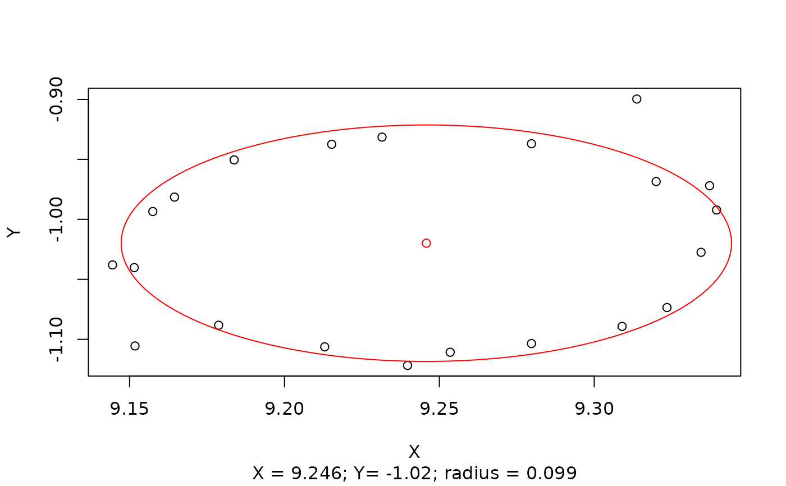

Adaptive random sample consensus for cicle fitting.
circleRANSAC( cloud, fpoints, pconf, poutlier, max_iterations, threads = 1L, plot = TRUE )
| cloud | A |
|---|---|
| fpoints | A |
| pconf | A |
| poutlier | A |
| max_iterations | An |
| threads | An |
| plot | Logical. If |
A data.table with the *XY* coordinate information of the circle center, the radius, the error based on the least squares fit, and the proportion of inliers.
J. Antonio Guzmán Q.
#Point cloud data("pc_tree") #Subset region at at breast height sub <- pc_tree[between(Z, 1.25, 1.35),] #Fit circle circleRANSAC(sub, fpoints = 0.2, pconf = 0.95, poutlier = c(0.5, 0.5), max_iterations = 100)#> X Y radius RMSE #> 1: 9.246359 -1.020327 0.09543664 0.002734469